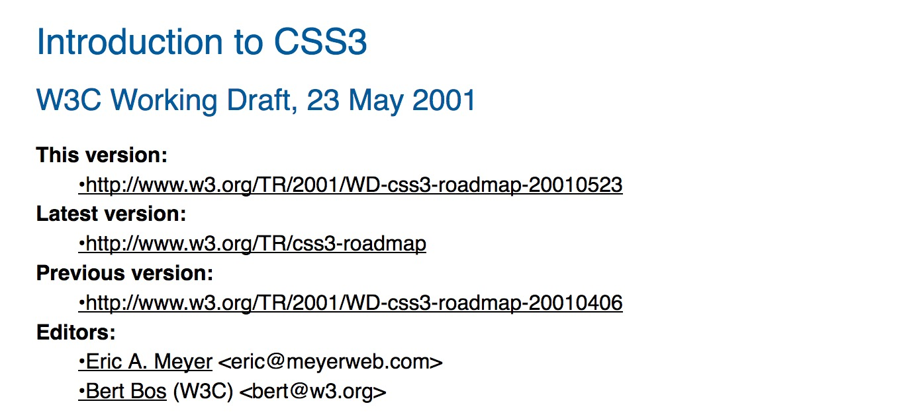
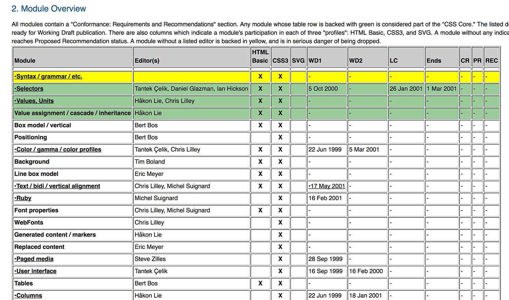
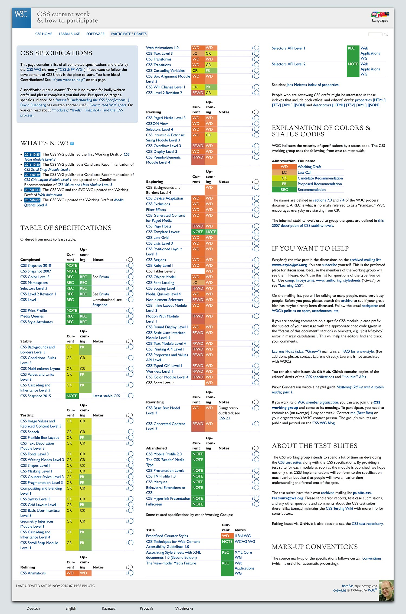
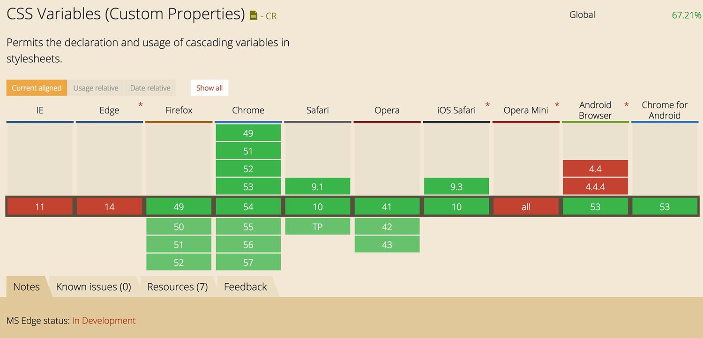
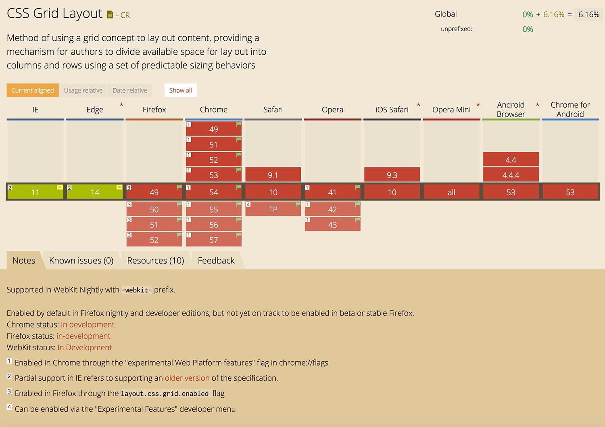
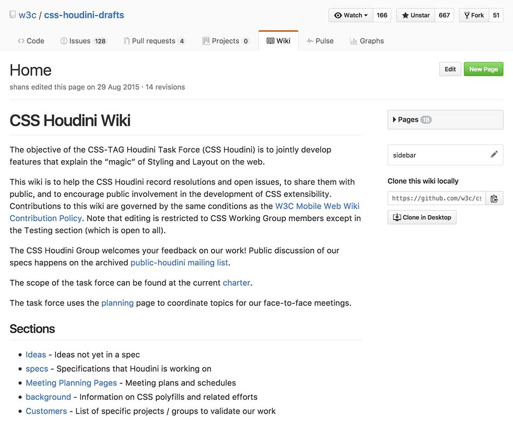
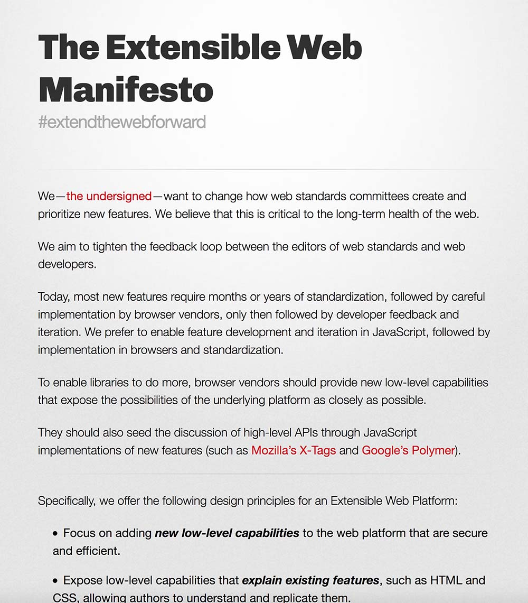
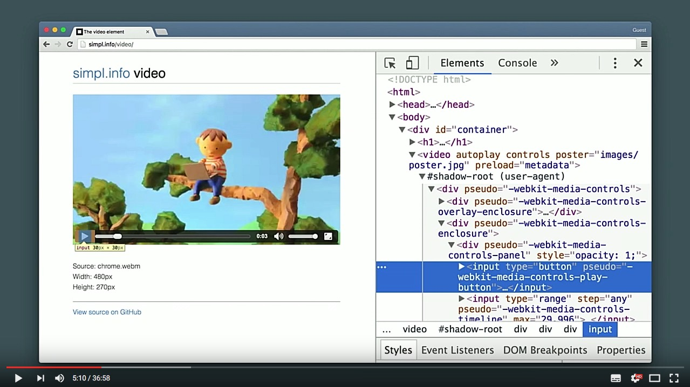
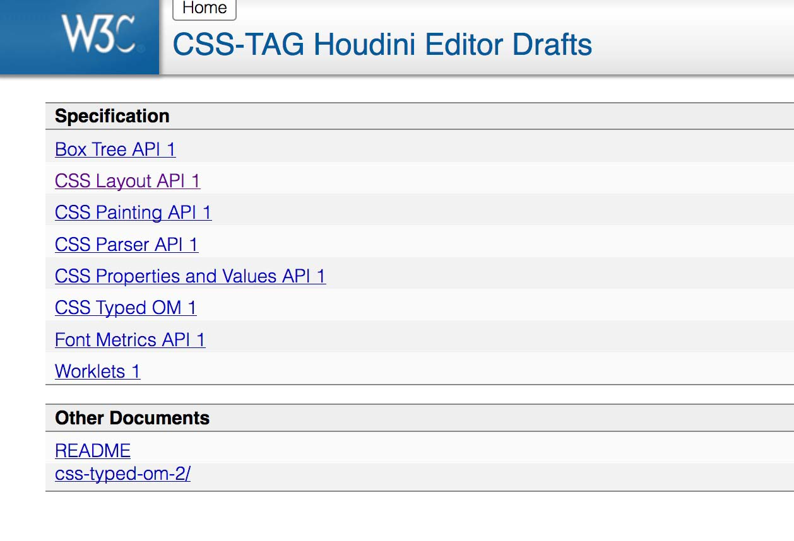

layout: true class: theme-whiskey, slides-left --- name: cover # CSS from the future Johannes Ewald<br> Peerigon GmbH<br> [@jhnnns](https://twitter.com/jhnnns) <img id="slide-cover-img" src="./assets/peerigon-logo.png" width="400"> --- layout: true class: theme-whiskey, slides-centered --- class: slides-chapter ## There is no CSS4 --- Starting with CSS3, specification work is separated into different modules. .slides-columns[ .col[  ] .col[  ] ] --- .slides-columns[ .col[ A list of all current [specifications](https://www.w3.org/Style/CSS/current-work.en.html). ] .col[  ] ] --- class: slides-chapter, theme-whiskey ## CSS Custom Properties --- [Demo](demo/custom-properties.html) --- ```css :root { --grid: 4px; } ``` - Custom properties are defined like regular properties starting with a `--` - They are usually defined on the `:root` selector (but they don't have to) --- ```css div:after { content: "Current grid is "var(--grid, "unknown"); } ``` - Custom properties can be included via the `var()` method - Property values are treated as "strings" by default - The `var()` method allows to define a default value as second argument --- ```css div { margin-top: calc(var(--grid) * 3); } ``` - Calculations must be wrapped with `calc()` --- ```css html { --bg-color: rebeccapurple; } body { --bg-color: hotpink; } div { background-color: var(--bg-color); /* hotpink */ } ``` - Custom properties cascade just like regular properties --- ```javascript const root = document.documentElement; root.style.setProperty("--bg-color", "aliceblue") root.style.getPropertyValue("--bg-color"); ``` - Custom properties can be read and modified via JavaScript ---  --- .slides-label[Side note] CSS2 already provided a special variable: ```css div { border: 1px solid currentColor; } ``` You should use it! --- class: slides-chapter, theme-whiskey ## Mixins --- Mixins = a set of properties provided by a single custom property ```css :root { --toolbar-theme: { background-color: hsl(120, 70%, 95%); border-radius: 4px; border: 1px solid var(--theme-color, hotpink); }; } .toolbar { @apply --toolbar-theme; } ``` --- .slides-label.slides-danger[Caveat] - No [official draft yet](https://tabatkins.github.io/specs/css-apply-rule/) - Example implementation only in Chrome/Opera behind flag --- class: slides-chapter, theme-whiskey ## Nesting --- ```css table.colortable { & td { text-align: center; &.c { text-transform: uppercase; } &:first-child, &:first-child + td { border: 1px solid black; } } & th { text-align: center; background: black; color :white; } } ``` --- .slides-label.slides-danger[Caveat] - No [official draft yet](https://tabatkins.github.io/specs/css-nesting/) - Even no example implementation yet --- class: slides-chapter, theme-whiskey ## Grid --- [Demo](demo/grid.html) --- ```css #page { display: grid; grid-template-columns: 200px 1fr; grid-gap: 12px; } ``` - `display: grid` switches the formatting context to grid - `grid-template-{columns,rows}` defines a grid template - `grid-gap` defines the gap between columns and rows --- ```css #page { display: grid; grid-template-columns: [sidebar-left] 200px [sidebar-right content-left] 1fr [content-right]; } #sidebar { grid-column: sidebar-left / sidebar-right; } #content { grid-column: content-left / content-right; } ``` - It is also possible to name grid lines --- ```css #page { display: grid; grid-auto-flow: row dense; } ``` - The auto-placement algorithm kicks in as soon as grid items are not explicitly placed on the grid - `grid-auto-flow` defines where new grid cells are created and whether holes are allowed to be filled up --- ```css #page { display: grid; justify-content: center; justify-items: end; align-content: center; align-items: end; } ``` - `{justify,align}-content` aligns all grid cells inside the container along the x/y axis - `{justify,align}-items` aligns the contents of each grid item --- .slides-label[Note] This is just a small excerpt.<br> Check out the full syntax [here](https://css-tricks.com/snippets/css/complete-guide-grid). --- ### CSS Custom Properties + Grid Layout = 💕 [Example](demo/grid-dynamic.html) ---  --- ### Why another layout mode? Was Flexbox not good enough? --- Flexbox is not suited for page layout: <iframe width="560" height="315" src="https://www.youtube.com/embed/vPryjyFP5FM" frameborder="0" allowfullscreen></iframe> --- .slides-columns[ .col[ #### Flexbox - Content dictates layout - Use it for smaller components<br>like navs, toolbars, etc. ] .col[ #### Grid - Grid dictates layout <sup>*</sup> - Use it for page layouts, forms, etc. ] ] <small> <span>*</span> with notable exceptions<br> [jakearchibald.com/2014/dont-use-flexbox-for-page-layout](https://jakearchibald.com/2014/dont-use-flexbox-for-page-layout/) </small> --- class: slides-chapter, theme-whiskey ## Houdini Drafts ---  ---  [extensiblewebmanifesto.org](https://extensiblewebmanifesto.org/) ---  --- ### [CSS Typed Object Model](https://drafts.css-houdini.org/css-typed-om/) ```javascript myElement.styleMap.set("opacity", new CSSNumberValue(3)); myElement.styleMap.set("margin-left", new CSSSimpleLength(20, "px")); myElement.styleMap.get("margin-left").value; // 20 myElement.styleMap.get("margin-left").type; // "px" ``` - Better performance because values don't need to be parsed/casted - Easier style manipulation via JavaScript --- ### [CSS Properties and Values](https://drafts.css-houdini.org/css-properties-values-api/) .slides-columns[ ```javascript CSS.registerProperty({ name: "--stop-color", syntax: "<color>", inherits: false, initialValue: "rgba(0,0,0,0)" }); ``` ```css .button { --stop-color: red; background: linear-gradient(var(--stop-color), black); transition: --stop-color 1s; } ``` ] - Allows to define typed CSS properties with custom syntax and inheritance behavior - Like CSS custom properties, but more low-level --- ### [Worklets](https://drafts.css-houdini.org/worklets/) - A worklet is like a light-weight web worker - Provides an API to extent the rendering engine - Is thread-agnostic: it may or may not run on the main thread - Has a minimal API on the JavaScript environment --- .slides-columns[ .col[ #### Paint worklet [Demo](http://googlechrome.github.io/houdini-samples/paint-worklet/ripple/) ] .col[ #### Animation worklet [Demo](http://googlechrome.github.io/houdini-samples/animation-worklet/parallax-scrolling/?noworklet&nojank) ] .col[ #### Layout worklet No demo yet ] ] --- Check out all the other specs:  --- .slides-label.slides-danger[Caveat] These specs are in a very early stage and the API is very likely to change.<br> They are far from production-ready. --- class: slides-chapter, theme-whiskey ## Other new features --- - [Scrolled-linked effects](https://developer.mozilla.org/en-US/docs/Mozilla/Performance/Scroll-linked_effects) - [Intrinsic & Extrinsic Sizing](https://www.w3.org/TR/css-sizing-3/) ([Demo](https://googlechrome.github.io/samples/css-intrinsic-sizing/)) - [Will Change](https://drafts.csswg.org/css-will-change/) - [Containment](https://drafts.csswg.org/css-containment/)